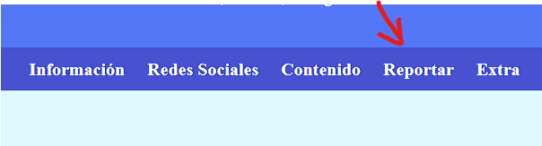

Vigilancia Ciudadana Conectada
Tu voz, tu calle, tu seguridad
Tu voz, tu calle, tu seguridad
primero para hcer un reporte deves dirigirt al partado de reportes

Estando dentro de la pagina aparecera una tipo encuesta la cual trae 3 apartados, el de donde te preguntan la ubicacion del incidente ahi pondras es lugar donde sucedio lo que quieres reportar,
luego esta la descripcion del incidente ahi descibiras con detalles lo que a sucedido
y por ultimo esta el de donde puedes adjuntar archivos sobre lo sucedido por ejemplo imagenes o videos, como maximo 5.
y al final le das a enviar y le haces para atras para regresar a la pagina principal.
luego de eso, lo que envió se ira a el correo de nuestro moderador quien se encarga de publicar el acontecimiento a nuestra red social.